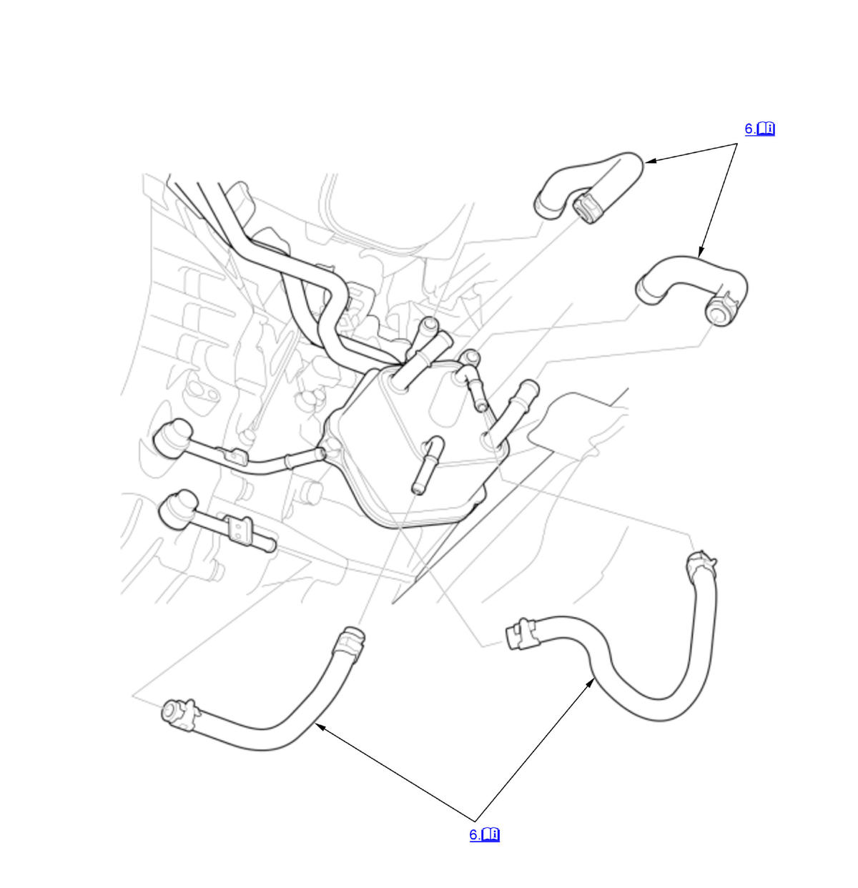

Removal and Installation: Procedure
WARNING: This page is about a different variant/trim than selected.
NOTE:
Numbered call-outs in figure pertain to list numbers in following procedure.

Courtesy of HONDA, U.S.A., INC. |
Detailed information, notes, and precautions |
- Vehicle - Lift
- Air Cleaner - Remove
- Engine Undercover - Remove
NOTE: Remove the necessary part(s).
- Transmission Fluid - Drain
- Engine Coolant - Drain
- MTF Cooler Hose - Disconnect
NOTE for installation
- Connect MTF cooler hoses (A) until the hose ends contact the bulges (B) or the pipe end (C), and adjust the hose clamps (D) positions.
- When attaching MTF cooler hoses, align the paint marks (E) on the hoses with the paint marks (F) on the MTF cooler lines as shown.
- When installing the hose clamps, make sure they do not interfere with the surrounding parts.
- All Removed Parts - Install
1. Install the parts in the reverse order of removal.